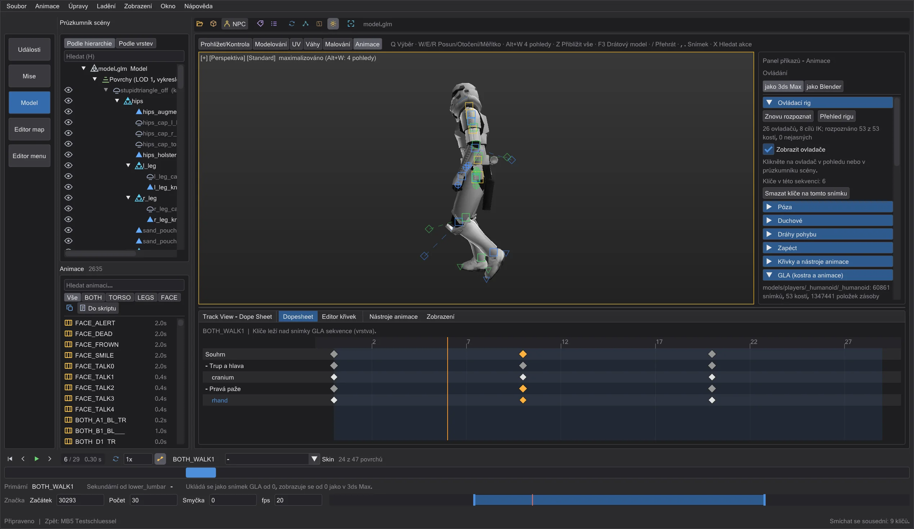
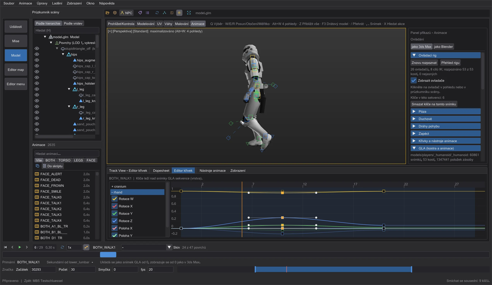
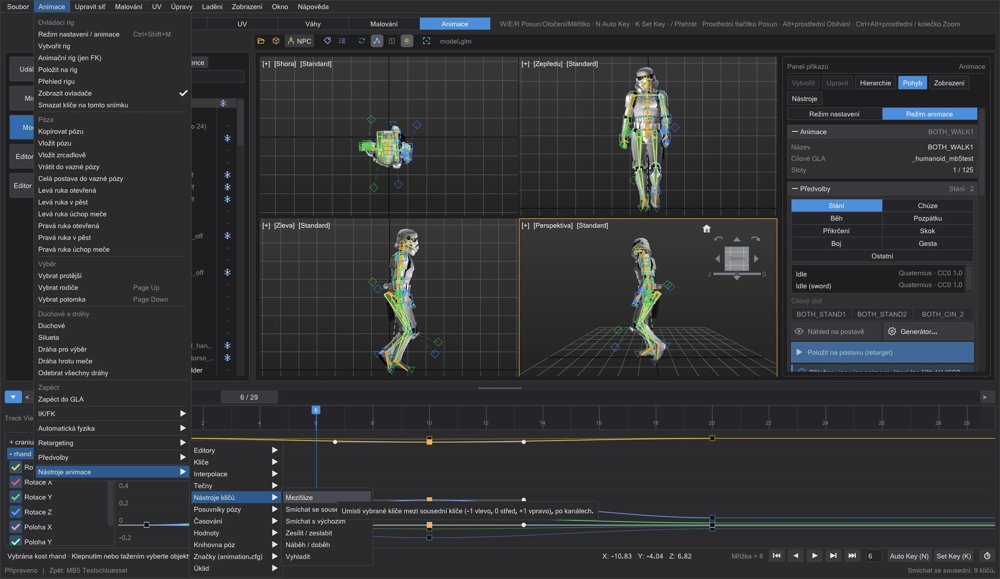
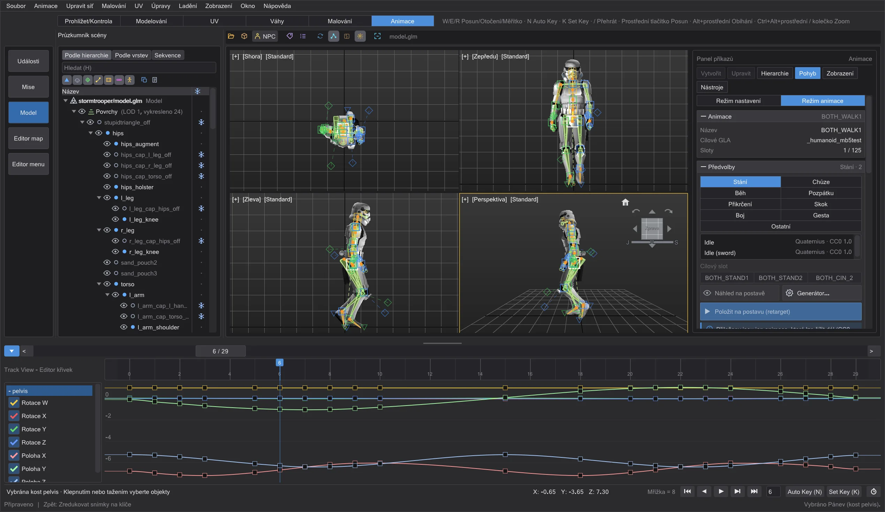

Karta Model: dopesheet, editor křivek a nástroje animace
Upravujte klíče ovládacího rigu v čase i jako křivky, míchejte je a vyhlazujte, měňte časování a hodnoty, zrcadlete celé sekvence, ukládejte pózy do knihovny, redukujte upečené snímky na několik klíčů a táhněte dráhu pánve v pohledu.

Dopesheet#
Dopesheet (nabídka Animace > Nástroje animace > Editory, pravé tlačítko pohledu, vyhledávání X/F3 nebo skupina Křivky a nástroje animace) otevře stopy časové osy jako dopesheet; jako v 3ds Max se jmenuje Track View - Dope Sheet, jako v Blenderu Dope Sheet. Úchyt nad časovou osou nastaví jejich výšku. Vlevo jsou řádky: Souhrn, souhrnný řádek pro každou končetinu (kliknutím se sbalí) a řádek pro každou kost; vpravo je každý klíč vybrané sekvence kosočtverec. Kliknutí na kosočtverec ho vybere (Shift přidá), rámeček kolem klíčů je vybere, tažení vybraných klíčů je posune v čase - vždy o celé snímky, protože GLA ukládá celé snímky. Kliknutí na souhrnný řádek vybere všechny klíče toho snímku v končetině. Světlý pruh je sekvence řádku animation.cfg, oranžová čára aktuální snímek; kliknutí do pravítka ho nastaví. Kolečko přibližuje, prostřední tlačítko posouvá. Jen animované a Jen vybrané filtrují řádky, Zobrazit vše přizpůsobí sekvenci. Jako v Blenderu maže X, posouvá G a škáluje S vybrané klíče, dokud je myš nad editorem.
Editor křivek#
Editor křivek (jako v 3ds Max Track View - Editor křivek, jako v Blenderu Editor grafů) ukazuje jednu křivku na kanál: rotaci jako kvaternion Rotace W, Rotace X, Rotace Y, Rotace Z a polohu X, Y, Z. Kliknutí na kost vlevo rozbalí její kanály, kde lze jednotlivé křivky skrýt a zobrazit. Tažení klíče nahoru či dolů mění hodnotu kanálu, do strany ho posune o celé snímky; tažením úchytu tvarujete křivku. Interpolace nastaví konstantní, lineární (otáčí po nejkratším oblouku, slerp) nebo Bézier od vybraného klíče k dalšímu. Tečny nastaví úchyty: jako v Blenderu automatická omezená (výchozí u nových klíčů, nikdy nepřestřelí), automatická, vektor, zarovnaná a volná; jako v 3ds Max se tytéž typy jmenují automatická, hladká, lineární, vlastní a vlastní (rozdělená). Bézierovy křivky se počítají přesně jako F-křivky Blenderu (pravidlo úchytů, Continuous Acceleration, vyhodnocení); tažený automatický úchyt se stane zarovnaným a vektorový volným, jako tam. Ctrl+kolečko přibližuje hodnoty. Pro pózu se kvaternion normalizuje, postava se tedy vždy otáčí jako tuhé těleso.

Nástroje animace#
Každý nástroj je v nabídce Animace > Nástroje animace, v pravém tlačítku editoru i pohledu a ve vyhledávání, každý s nápovědou. Nástroje klíčů působí na vybrané klíče kanál po kanálu: Mezifáze, Smíchat se sousedem, Smíchat s výchozím, Zesílit / zeslabit, Náběh / doběh a Vyhladit. Posuvníky pózy nastaví pózu na aktuálním snímku z předchozího a dalšího klíče: Mezipóza, Zesílit pózu, Uvolnit pózu, Smíchat se sousední, Smíchat s klidovou pózou. Každý otevře malý posuvník; pohled ukazuje výsledek už při tažení, Použít ho ponechá jako jeden krok zpět, Zrušit ho vrátí. Časování: přichytit výběr na aktuální snímek (nebo ho posunout, aby tam ležel první či poslední klíč), na aktuálním snímku vložit nebo odebrat snímky, časový posun, sdílet časy klíčů (i přesně časy naposledy vybrané kosti). Hodnoty: nula, na aktuální hodnotu, negovat, obrátit, zrcadlit podle aktuálního snímku; Posun animace přenese změnu na jednom klíči na ostatní klíče kosti. Zrcadlit animaci (vlevo/vpravo) zrcadlí celou sekvenci přes kosti l_/r_. Knihovna póz ukládá pojmenované pózy do dokumentu modelu a znovu je použije, i zrcadlově. Značky (animation.cfg) používají řádek animation.cfg: klíče na jeho prvním a posledním snímku, uzavřít smyčku, vybrat klíče uvnitř.

Úklid a redukce#
GLA ukládá každý snímek. Zredukovat snímky na klíče udělá ze snímků vybrané sekvence (s klíči rigu navrch) několik upravitelných klíčů: pro každou kost se klíče přidají tam, kde se křivka nejvíc odchyluje, pak každý nepotřebný zase zmizí; zkusí se lineární i Bézier a zůstane to s méně klíči. Klíče pak popisují celý pohyb nad vaznou pózou. Pravidlem je mez compressBone z fáze 3: po novém zapečení se každý snímek kosti otáčí v mezích zaokrouhlení, které dovoluje sám formát GLA, a poloha se liší nejvýš o jeden krok 1/64. Změřeno na každé sekvenci _humanoid: Jedi Academy ponechá jako klíče 58 % snímků kostí, Jedi Outcast 66 %, Movie Duels 43 %, každý snímek kosti v mezích. Odebrat nadbytečné klíče odebere klíče shodné se sousedy, Odebrat statické kanály ponechá jeden klíč kostem, které se nehýbou, Filtr kvaternionů dá každému kvaternionu znaménko souseda, aby křivky neskákaly (kanály jsou kvaterniony, Eulerův filtr není třeba). Výsledek zapečte jako dřív pomocí Zapéct do GLA na slot cíle.

Tažení drah pohybu#
Na dráze pánve nebo kořene (Dráha pro výběr) lze každý bod v pohledu táhnout: kost se na tom snímku přesune tam, v rovině pohledu procházející bodem, a dostane klíč (Ctrl+Z ho vrátí). Se Posun animace jdou ostatní klíče s ní. Na drahách rukou, chodidel a hrotu meče bod posouvá cíl IK (stránka IK/FK).